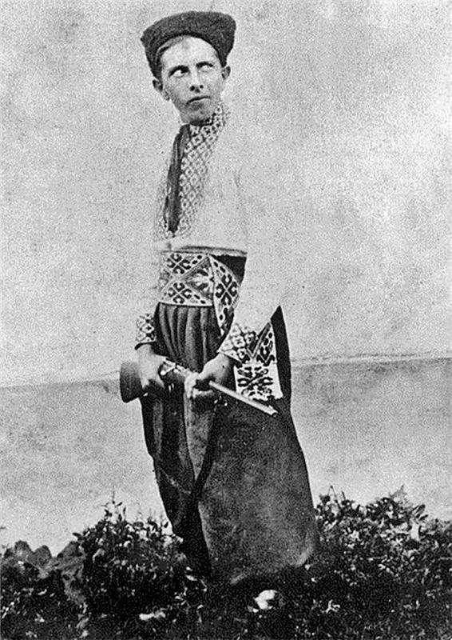
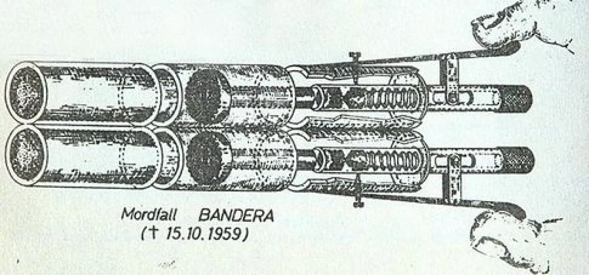

Дитинство і походження
Степан Бандера народився 1 січня 1909 року в селі Старий Угринів, яке на той момент входило до Калуського
повіту Королівства Галичини та Володимирії Австро-Угорської імперії (зараз це Калуський район
Івано-Франківської області). Батько Степана Бандери був греко-католицьким священиком, а мати походила з
родини священиків Глодзінських. Всього в сім'ї було семеро дітей, Степан Бандера був другим після
найстаршої
сестри
Марти-Марії.
Під час Першої світової війни фронт чотири рази пересувався через рідне село Степана Бандери. З листопада
1918 року його батько був послом до парламенту Західноукраїнської Народної Республіки — Української
Національної Ради — у Станиславові та брав активну участь у формуванні державного життя Калущини. Того ж
року він добровільно вступив в Українську Галицьку армію, де в 1919—1920 роках служив капеланом 9-го
полку
Третьої Бережанської бригади УГА 2-го корпусу.
У травні 1919 року під час наступу польських військ десятирічний Степан Бандера разом із сім'єю був
евакуйований до подільського містечка Ягільниці, де вони перебували до вересня.
У 1919 року Бандера вступив до української гімназії у Стрию, де вчився до 1927 року. В 1922 році він став
учасником Пласту. Того ж року його мати померла від туберкульозу.
У середині 1927 року Степан Бандера склав випускні іспити в гімназії і збирався вступити до Української
господарської академії в місті Подєбради у Чехословаччині, але польська влада відмовилась надати йому
закордонний паспорт. Через це до 1928 року він змушений був залишатись у Старому Угриневі. В цей час він
працював у читальні Просвіти, вів театрально-аматорський гурток і хор, заснував місцеве товариство Луг
(його
члени проводили спортивні свята і концерти, ставили вистави й виступали з доповідями, популяризуючи
українську національну ідею). Також він керував організаційно-вишкільною роботою по лінії підпільної
Української військової організації (УВО) в довколишніх селах.
Студентські роки, ОУН, політичні вбивства та ув’язнення
У вересні 1928 року Степан Бандера переїхав до Львова, де записався на агрономічний відділ Високої
Політехнічної Школи, яку так і не закінчив через арешт. У студентські роки він був членом українського
товариства студентів політехніки Основа та членом управи Кружка студентів-рільників.

Також він деякий час працював у бюро товариства Сільський Господар, що займалося розвитком агрокультури
на західних українських землях. У неділі та на свята Бандера їздив з товариством Просвіта у села
Львівщини з доповідями та допомагав організовувати інші події. Він продовжував брати активну участь у
Пласті, був також членом Українського Студентського Спортового Клубу (УССК), товариств Сокіл-Батько й Луг
у Львові. Займався кількома видами спорту, зокрема, бігом, плаванням та лижним спортом.
У 1932−1933 роках Степан Бандера виконував функцію заступника крайового провідника, а в середині 1933
року був призначений крайовим провідником ОУН і крайовим комендантом УВО в Західній Україні.
Під керівництвом Бандери ОУН здійснила низку каральних акцій проти представників польської окупаційної
влади. Три політичні вбивства ОУН у цей період отримали значний розголос. Перше з них — вбивство
шкільного куратора Гадомського, якого звинувачували у нищенні українського шкільництва та полонізації.
Друге — вбивство секретаря консульства СРСР у Львові, який був одночасно агентом ГПУ при НКВС, Олексія
Майлова, яке було здійснене на знак протесту проти Голодомору в Україні. Третім стало вбивство міністра
внутрішніх справ Польщі Броніслава Перацького, який керував акціями «пацифікації» українців, внаслідок
яких постраждали від побоїв понад тисячу людей і від семи до 35 людей загинули. Степан Бандера здійснював
загальне керівництво замахами на Майлова та Перацького.
14 червня 1934 року, за день до вбивства Перацького, Бандеру заарештували. До 13 січня 1936 тривав
Варшавський процес, на якому Бандеру разом з 11 іншими обвинуваченими судили за належність до ОУН і
організацію вбивства Перацького.
Спочатку Бандеру засудили до смертної кари, але потім вирок замінили на довічне ув’язнення. У в’язниці
він перебував до вересня 1939 року. Після початку Другої світової війни в’язням-націоналістам вдалося
звільнити Бандеру з одиночної камери, де він на той час перебував, після чого він дістався до Львова. У
другій половині жовтня 1939 року Бандера разом з братом Василем та з чотирма членами ОУН нелегально
перетнув радянсько-німецьку демаркаційну лінію.
У першій половині січня 1940 року Бандера прибув в Італію, де жив його брат Олександр.
ОУН-Б та Друга світова війна
Після звільнення з польських тюрем внаслідок окупації Польщі Німеччиною Степана Бандери та групи молодих
українських націоналістів, яких він очолив, вони почали вимагати від керівництва ОУН зміни її
вичікувальної тактики та усунення з керівництва кількох членів. Конфлікт швидко призвів до розколу — вже
у лютому 1940 року утворився Революційний провід ОУН на чолі з Бандерою. Внаслідок цього ОУН розкололася
на ОУН мельниківців (їх очолював полковник Андрій Мельник, затверджений головою Проводу українських
націоналістів за кілька місяців до звільнення Бандери) та ОУН бандерівців (також ОУН-Б, Організація
українських націоналістів революційна, ОУН самостійників-державників). 1−4 квітня 1941 року на II
Великому Зборі ОУН-Б Бандеру офіційно обрали її керівником.
Незадовго до німецько-радянської війни Бандера ініціював створення у Кракові Українського Національного
Комітету для об'єднання українських політичних сил в боротьбі за державність.
За згодою німецького режиму ОУН-Б сформувала батальйони Нахтігаль і Роланд, які Бандера вважав ядром
майбутньої української армії,30 червня 1941 року Провід ОУН-Б проголосив відновлення Української Держави
у Львові. Через це вже 5
липня 1941 року Бандеру заарештували гітлерівці та відправили до Кракова. Там від нього зажадали
відмовитись від проголошення української державності, але він не став цього робити.
30 червня 1941 року батальйон Нахтігаль вступив у Львов і був присутній на Акті Проголошення Української
держави. У липні 1941 року бійці батальйону брали участь в боях з червоними під Вінницею. Батальйон
Роланд був відправлений для підтримки німецьких військ в Румунію, а потім у Молдову.
Під час нападу Німеччини на СРСР оунівці-підпільники підняли потужне антирадянське повстання, були
випадки, коли загони ОУН ще до приходу німців займали населені пункти.
Тим часом 9 липня Бандеру відправили в Берлін, де помістили в тюрму гестапо на Ліхтерфельде-Ост. 20 липня
Бандеру знову перевели під домашній арешт. В цей час йому пропонували створити підконтрольну німцям
Крайову раду, а згодом і Дорадчу раду при Райхскомісаріаті. Бандера відмовився піти на вимоги
гітлерівців.
Коли у вересні 1941 року німецьким військам вдалося оточити та захопити Київ, Степана Бандеру відправили
у центральну тюрму гестапо в камеру № 29 на Прінцрегентштрасе. Одночасно провели масові арешти членів ОУН
на всіх окупованих німцями територіях в Україні та Європі, ув’язнивши півтори тисячі оунівців.
Двоє братів Степана Бандери — Василь та Олександр — загинули у концтаборі Аушвіц наприкінці липня 1942
року. Третього брата — Богдана — розстріляло гестапо.
У липні 1941 року батька Степана Бандери розстріляло в Києві НКВД, а двох його сестер вивезли в табори в
Сибіру. Третя сестра Степана Бандери на 10 років потрапила в радянські табори у 1946 році.
На початку січня 1942 року Бандеру розмістили у камері-одиночці № 73 концтабору Заксенгаузен.
З концтабору Бандеру звільнили у вересні 1944 року. Після цього його перевезли на околиці Берліна і знову
утримували під домашнім арештом, запропонувавши співпрацю в Українському національному комітеті, однак
він знову відмовився. Наприкінці грудня 1944 року гестапо перевело Бандеру в Берлін.
1 лютого 1945 року Бандера з родиною втік під час авіаційних бомбардувань до Тіролю. Звідти він згодом
переїхав до Відня.
Діяльність після війни і вбивство
Доки Бандера перебував в ув’язненні, ОУН-Б керував Микола Лебідь. У травні 1943 року він передав свої
повноваження Роману Шухевичу.
Незадовго до цього — у лютому 1943 року — з ініціативи Шухевича була проведена III конференція ОУН, на
якій було прийняте рішення про активізацію партизанської діяльності, початку збройної боротьби та
створення Української повстанської армії. Тоді ж було вирішено вести двофронтову антинімецьку й
антирадянську боротьбу.
У лютому 1945 року на Крайовій ширшій нараді Проводу ОУН-Б на Українських Землях Бандера увійшов до
керівництва організації — разом з Романом Шухевичем та Ярославом Стецьком. А в 1947 році Бандера знову
очолив Провід ОУН-Б. Він вирішив продовжувати збройну боротьбу проти Москви у післявоєнний час і
організовував крайовий зв’язок і бойові групи ОУН-Б, доки його не вбили.
Через свою діяльність Степан Бандера разом з сім'єю був змушений часто змінювати місце проживання. До
1948 року вони переїжджали шість разів. Через необхідність дати доньці хорошу освіту, Бандера та його
сім'я у 1954 році остаточно переїхала до німецького міста Мюнхен, де він жив під іменем Штефан Попель.
15 жовтня 1959 року Бандеру знайшли ще живого у під'їзді його будинку на вулиці Крайтмайр, 7. Перед цим
агент КДБ Богдан Сташинський зі спеціального пістолета вистрілив в обличчя Степану Бандері струменем
розчину ціаніду калію. Отруту виявила медична експертиза.

Офіційна радянська пропаганда звинувачувала у скоєнні цього злочину міністра у справах біженців ФРН
Теодора Оберлендера, з яким Степан Бандера мав тісні зв’язки в роки Другої світової війни.
Однак вже на початку 1960-х німецький суд визнав, що головним обвинуваченим у вбивстві Бандери є
радянський уряд, а Сташинського засудили до восьми років позбавлення волі, з яких він відсидів чотири.
20 жовтня 1959 року Степана Бандеру поховали на мюнхенському цвинтарі Вальдфрідгоф.
В інтерв'ю російській газеті Комсомольская правда, оприлюдненому у номері за 6 грудня 2005 року, колишній
голова КДБ СРСР Володимир Крючков визнав, що «вбивство Степана Бандери було одним з останніх усунень КДБ
насильницькими методами небажаних елементів».
Звання Героя України
У січні 2010 року Віктор Ющенко присвоїв Степану Бандері звання героя України. 2 квітня 2010 року
Донецький окружний адміністративний суд визнав незаконним і скасував цей указ. 23 червня 2010 року це ж
рішення було підтверджено постановою Донецького апеляційного адміністративного суду. У 2011 році Вищий
адміністративний суд України остаточно відібрав звання героя у Бандери.